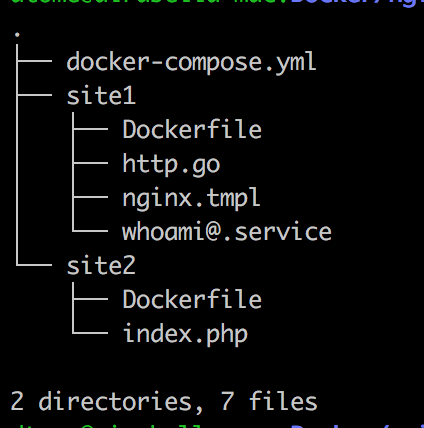

Reverse proxy with Docker
Agenda
- Context
- Problem
- Proposal solution
- More...
Context
- Multiple web apps.
- Dockerized on the same server.
- Only using docker-compose
- Manual management (no kubernetes, no swarm)
Problem
- Docker containers are assigned random ports
- Define ports policy
- Only one container can bind port 80 at a time
Difficult to maintain
Impossible to build multiple containers in single server
Proposed solution
Reverse proxy to the rescue!
Reverse proxy on front
- Type of proxy server.
- Intermediary for its associated clients to contact any external server.
Reverse proxy on front
jwilder/nginx-proxy
Reverse proxy on front
- jwilder/nginx-proxy: Simple nginx proxy.
- jwilder/docker-gen: Generate Nginx config files using Docker containers meta-data.
Setup: Starter structure
Setup: docker-compose.yml 1/2
nginx-proxy:
image: nginx
ports:
- 80:80
volumes:
- /etc/nginx/conf.d/
dockergen:
image: jwilder/docker-gen
command: -notify-sighup nginx-proxy -watch
/etc/docker-gen/templates/nginx.tmpl
/etc/nginx/conf.d/default.conf
volumes:
- /var/run/docker.sock:/tmp/docker.sock:ro
- ./nginx.tmpl:/etc/docker-gen/templates/nginx.tmplSetup: docker-compose.yml 2/2
whoami:
build: ./site1/
container_name: whoami
environment:
- VIRTUAL_HOST=whoami.local
php-app:
build: ./site2/
container_name: php-app
environment:
- VIRTUAL_HOST=php.localSetup: nginx.tmpl
- Template using in Go text/template
- Interacts with docker api and Generate static config file from a template
- Set to reload config each change on template
{{ if eq $https_method "redirect" }}
server {
server_name {{ $host }};
listen 80 {{ $default_server }};
{{ if $enable_ipv6 }}
listen [::]:80 {{ $default_server }};
{{ end }}
access_log /var/log/nginx/access.log vhost;
return 301 https://$host$request_uri;
}
{{ end }}Run
- docker-compose up -d
Advanced
- Create your own templates
- Combine it with let's encrypt
Custom templates
server {
listen 80;
server_name localhost 10.100.1.1 default_server;
{{ range $srv, $conts := groupBy $ "Env.LOCATION_PATH" }}
{{ range $container := $conts }}
{{ $network := index $container.Networks 0 }}
location /{{ $container.Env.LOCATION_PATH }}/ {
proxy_pass {{ $network.IP }}:{{ $address.Port }}/;
}
{{ end }}
{{ end }}
}Using with let's encrypt

Using with let's encrypt
nginx-letsencrypt:
image: jrcs/letsencrypt-nginx-proxy-companion
volumes:
- ./conf.d:/etc/nginx/conf.d
- ./certs:/etc/nginx/certs:rw
- /var/run/docker.sock:/var/run/docker.sock:ro
environment:
NGINX_DOCKER_GEN_CONTAINER: "nginx-gen"
NGINX_PROXY_CONTAINER: "nginx"
Using with let's encrypt
...
environment:
LETSENCRYPT_HOST=whoami.com
LETSENCRYPT_EMAIL=who@whoami.com
...
Conclusion
- Multiple dockerized apps on same server
- Difficult to manage
- Reverse proxy
Thank you!!
Questions?